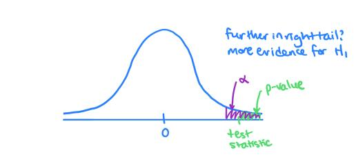

15 December 2026
When does a sample provide enough evidence to challenge a business claim?
Follow one ETF lecture sequence: claim → hypotheses → sampling model → test statistic → p-value → decision → business meaning. Apply it to a mean, a proportion, and a one-sample decision threshold.
A sample estimate rarely equals a stated benchmark exactly. A test asks whether the difference is too large to explain readily by sampling variation, assuming the benchmark is true.
| Business claim | Null | Alternative | Tail |
|---|---|---|---|
| Average wait exceeds 30 minutes | H_0:\mu=30 | H_1:\mu>30 | right |
| Mean sale price differs from $1.2m | H_0:\mu=1.2 | H_1:\mu\ne1.2 | two |
| Fewer than 5% of invoices have errors | H_0:\pi=0.05 | H_1:\pi<0.05 | left |
The parameter is a population mean or proportion, not the observed sample statistic. The equality belongs in the null.
ETF’s workshop asks whether a population click-through mean is below 12 clicks per minute. Before using the data, write H_0:\mu=12 and H_1:\mu<12.
The word below specifies the left tail. The observed sample mean determines the statistic, but it must not determine which alternative we choose.
Write the parameter, H_0, H_1 and tail for: average delivery time above 30 minutes; mean price different from $1.2m; invoice error rate below 5%; and more than half of customers using an app.
The same order works for a mean, a proportion and a mean tested against a decision threshold.

ETF Seminar Week 6: the p-value is the tail area at least as extreme as the observed statistic, assuming the null model.
For a left-sided claim, use the left tail; for a two-sided claim, count both tails. A p-value is not the probability that H_0 is true.
When the population SD is unknown, use the sample SD:
t=\frac{\bar x-\mu_0}{s/\sqrt n}, \qquad df=n-1.
The numerator is the observed difference from the null benchmark. The denominator is the standard error of the sample mean. Check independence and whether the t approximation is reasonable for the data.
| Alternative | Excel formula |
|---|---|
| \mu<\mu_0 | =T.DIST(t,df,TRUE) |
| \mu>\mu_0 | =T.DIST(-t,df,TRUE) |
| \mu\ne\mu_0 | =T.DIST.2T(ABS(t),df) |
Keep the signed statistic visible. ABS belongs only in the two-sided tail formula.
A random sample has n=45, \bar x=10.8 and s=3.2 clicks per minute. Test H_1:\mu<12 at \alpha=0.05.
=(10.8-12)/(3.2/SQRT(45)).=T.DIST(t_cell,44,TRUE).ETF Workshop Week 6 supplies the business context; keep your worksheet formulas auditable.
A random sample of 40 students has mean monthly discretionary spending $283 and SD $17.85. Test at 5% whether the population mean exceeds $275. Show the five steps and an Excel p-value formula. State what the sample does and does not establish.
A two-sided alternative asks whether the population mean differs in either direction. The statistic stays the same, but the p-value includes both tails.
Choose the question before inspecting the result. Changing the tail to obtain a smaller p-value invalidates the planned error rate.
Revisit the spending sample with H_1:\mu\ne275. Identify which entries in your worksheet change and compare the two conclusions.
For H_0:\pi=\pi_0, first count successes x from n observations and calculate \hat p=x/n. The large-sample test statistic is
z=\frac{\hat p-\pi_0}{\sqrt{\pi_0(1-\pi_0)/n}}.
Check n\pi_0\ge5 and n(1-\pi_0)\ge5. A test uses the null value \pi_0 in its standard error; an interval uses \hat p.
| Alternative | Excel p-value |
|---|---|
| \pi<\pi_0 | =NORM.S.DIST(z,TRUE) |
| \pi>\pi_0 | =1-NORM.S.DIST(z,TRUE) |
| \pi\ne\pi_0 | =2*(1-NORM.S.DIST(ABS(z),TRUE)) |
Use a clearly labelled success count and denominator. Check that the selected tail agrees with the claim.
ETF’s workshop gives a 95% error-free benchmark and 229 successes among 250 randomly sampled transactions.
Test H_0:\pi=0.95 against H_1:\pi<0.95 at \alpha=0.10. In Excel, calculate \hat p, the two null expected counts, z and the left-tail p-value. Interpret the decision as evidence about the bank’s population success rate.
An audit finds 288 accurate invoices among 300. Test at 5% whether the population accuracy rate is below 98%. Show the count check, statistic, Excel formula, decision and one-sentence business conclusion.
A business team may specify a minimum mean value that would change its decision. Let \mu be the population mean and \mu_0 the threshold.
To ask whether the mean exceeds that threshold, write H_0:\mu\le\mu_0 and H_1:\mu>\mu_0. Calculate the test statistic at the boundary \mu_0. This is a right-sided, one-sample t test.
For n independent observations of one numerical outcome:
\bar x=\text{sample mean},\qquad SE=\frac{s}{\sqrt n},\qquad t=\frac{\bar x-\mu_0}{SE},\qquad df=n-1.
In Excel use COUNT, AVERAGE and STDEV.S for the sample summaries, then calculate SE and t in labelled cells. For a right-sided test, the p-value is =T.DIST(-t_cell,df_cell,TRUE). The t distribution is symmetric, so this left-tail calculation equals the right-tail area without subtracting a number close to 1.
In week4-proportions-data.xlsx, the RealEstate sheet records Price in AUD thousands. Test whether population mean price exceeds AUD 1.2 million; use 1200 as the workbook benchmark.
COUNT, AVERAGE and STDEV.S.T.DIST for the right-tail p-value; decide at 5% and conclude in context.Filter SchoolZone=No and use only those prices. At 5%, test whether the population mean for this group exceeds AUD 1.0 million.
Show the sample size, mean, SD, standard error, t, degrees of freedom, Excel p-value, decision and plain-language conclusion. State which population your filtered sample could represent.
A one-sample test compares one population mean with a fixed benchmark. It does not test whether two model or property-group means differ, even when both groups appear in a descriptive chart.
The benchmark and the chosen significance level should be set before inspecting the data. A statistically clear result still depends on the sampling design, measurement quality and whether the business benchmark is meaningful.
If p<\alpha, reject H_0 and describe the evidence for H_1. If p\ge\alpha, fail to reject H_0: the sample does not give sufficient evidence for H_1 at that threshold.
Failure to reject does not prove equality. The p-value does not measure the chance that the null is true.
| Decision | H_0 true | H_0 false |
|---|---|---|
| Reject H_0 | Type I error | correct rejection |
| Fail to reject H_0 | correct non-rejection | Type II error |
A Type I error has probability \alpha when the null assumptions hold. Reducing \alpha makes rejection harder and can increase Type II risk when other factors remain fixed.
For the bank test, a Type I error means concluding that population transaction success is below 95% when it is not. A Type II error means missing a real shortfall below 95%.
Explain whose decision changes if either error occurs. The costs of the errors help select \alpha before viewing the sample.
For the invoice-accuracy test, describe both errors in everyday language. Which error would be more costly to an operations manager, and why? How would that judgment affect the chosen significance level?
A small p-value concerns evidence against the null. It does not say the effect is large enough to matter.
Report the observed estimate, its units, a confidence interval when appropriate, and the business threshold. The threshold itself is a judgment about what matters; the test quantifies evidence that a population mean exceeds it. Sampling and measurement limitations still matter.
A report says, “Waiting time fell by 0.2 minutes, p<0.001, so the redesign was a major success.” Identify what the p-value supports, what further information you need, and a more defensible headline.
The current assignment asks you to distinguish four different outcomes: dropped calls, support reports, all-cause returns, and measured handset reception loss. They have different units and denominators.
For the one-sample mean test, calculate each iPhone 4 handset’s loss, then ask whether the population mean exceeds the stated 3 dB threshold. Calculate the t statistic and right-tail p-value from the sample summaries. The descriptive comparison with 3GS is a separate question and this test does not establish a model difference.
Can another person trace the population and event, raw rows, group counts, inputs, assumptions, hypotheses, formula or ToolPak command, tail, decision and conclusion?
Claim → method → Excel execution → validation → plain-language conclusion. Keep the effect size and practical threshold visible beside the p-value.